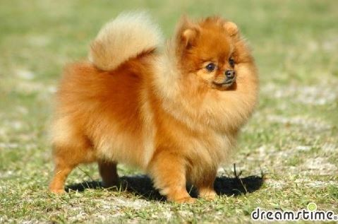

포메리안
Pomeranian 개의 품종 중 하나. 원산지는 독일이며 전 세계적으로 사랑받는 반려견으로서 대중적으로 특히 유명한 견종이다. 스피츠 계열에 속하는 견종이며, 원래 스피츠와 사모예드에서 파생되었기 때문에 츠버그스피츠라 불리기도 한다. 포메라이언(안)이 아니라 포메라니안이다. 의외로 많은 사람들이 포메라이언이라고 한다. 포메라니안을 키우는 견주조차도 제대로 모르는 경우가 많다. 심지어 그 유명한 강형욱조차 그렇게 발음한다. 포메라니안을 키우는 보호자들조차도 대부분 '포메', '포메' 그럴 뿐, 풀명칭을 물어보면 더듬거리며 부정확하게 알고 있는 경우가 많다.